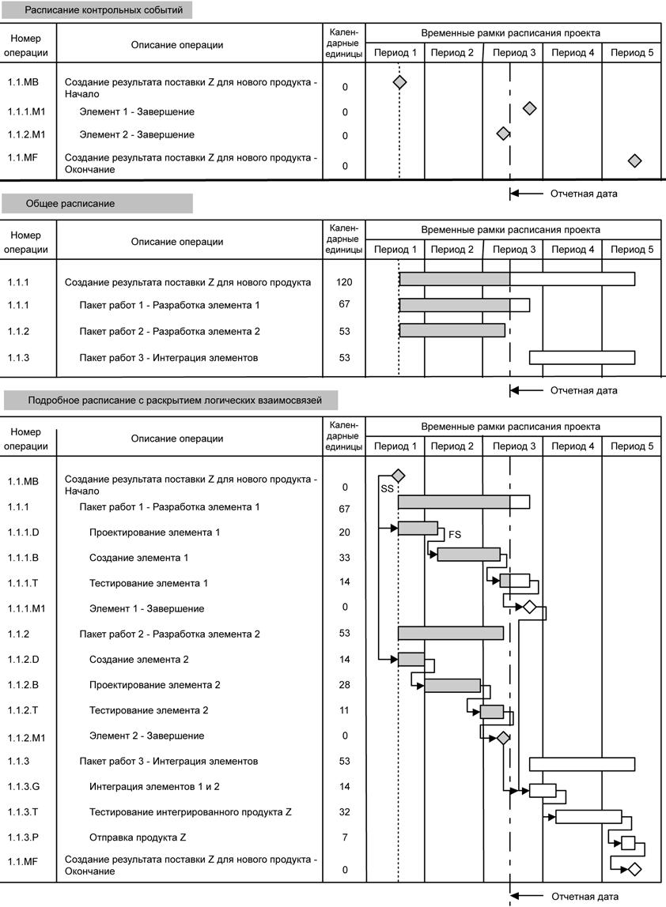

Разработка расписания (п.6.5, рис.8.1)
Разработка расписания - составление расписания проекта с учетом последовательностей операций, их длительности, требований к ресурсам и ограничений на сроки.Это итеративный процесс, определяющий плановые даты начала и завершения операций проекта. При разработке расписания может потребоваться проверять и редактировать оценки длительности и ресурсов, чтобы в итоге получить одобренное расписание проекта, которое можно использовать как базовое и по которому можно будет оценивать прогресс. Разработка расписания производится непрерывно по всему проекту по мере выполнения работ, изменения плана управления проектом и возникновения или прекращения ожидаемых рисков или выявления новых рисков.
6.5.2. Разработка расписания: инструменты и методы
6.5.2.1 Анализ сети расписания представляет собой технологию создания расписания проекта. В нем применяется модель расписания и различные методы анализа, например метод критического пути, метод критической цепи, анализ возможных сценариев и выравнивание ресурсов для расчета дат раннего и позднего старта и финиша и расчетных дат начала и завершения для незавершенных частей плановых операций проекта. Если используемая в модели диаграмма расписания имеет в сети петли или открытые концы, то перед применением одного из аналитических методов эти петли и открытые концы корректируются. У некоторых путей в сети могут быть точки слияния или точки расхождения, которые можно выявить и использовать в анализе сжатия расписания и других анализах.
6.5.2.2 Метод критического пути используется для расчета теоретических дат раннего старта и раннего финиша и позднего старта и позднего финиша для всех плановых операций без учета ограничений по ресурсам. Этот расчет производится путем проведения анализа прямого и обратного прохода по путям сети расписания проекта. Полученные даты раннего и позднего старта и финиша не обязательно представляют собой расписание проекта; они скорее показывают периоды времени, в пределах которых следует планировать данную операцию, исходя из длительности операций, логических взаимосвязей, опережений, задержек и прочих известных ограничений.Рассчитанные ранний старт и ранний финиш и поздний старт и поздний финиш могут быть, а могут и не быть одинаковыми на любом пути в сети, поскольку общий временной резерв, обеспечивающий гибкость расписания, может быть положительным, отрицательным и равным нулю. На любом пути в сети гибкость расписания измеряется по положительной разности между ранними и поздними датами и называется "общим временным резервом". У критических путей общий временной резерв может быть отрицательным или равным нулю, а плановые операции на критическом пути называются "критическими операциями". Для получения сетевых путей с положительным или нулевым общим временным резервом могут потребоваться корректировки длительности операций, логических взаимосвязей, опережений и задержек и прочих ограничений. Как только общий временной резерв на пути в сети оказывается нулевым или положительным, можно также определить т.н. свободный временной резерв - количество времени, на которое плановая операция может быть отложена, не вызывая задержки раннего старта непосредственно примыкающей последующей операции на данном сетевом пути.
6.5.2.3 Сжатие расписания укорачивает расписание проекта без изменения содержания проекта, причем сохраняются ограничения на сроки, требуемые даты или иные цели, указанные в расписании. Методы сжатия расписания включают в себя:
- Сжатие. При методе сжатия расписания выполняется анализ компромиссов стоимости и сроков, чтобы определить, каким образом возможно максимально сжать сроки при минимальных дополнительных затратах. Сжатие не всегда позволяет получить приемлемое решение и может привести к увеличению стоимости.
- Быстрый проход. При этом методе сжатия расписания фазы или операции, обычно выполняемые последовательно, проводятся параллельно. В качестве примера можно привести строительство фундамента здания до подготовки всех архитектурных чертежей.
- Быстрый проход может привести к доработкам и возрастанию риска. Для этого метода может потребоваться выполнение работ без готовой подробной информации (например, чертежей). В результате приходится находить компромисс между сроками и стоимостью и возрастает риск получения укороченного расписания проекта.
6.5.2.4 Анализ возможных сценариев. Это анализ, в основе которого лежит рассмотрение возможных сценариев. Такие сценарии формулируются как вопросы типа "Что произойдет, если ситуация будет развиваться по сценарию 'Х'?" В этом случае выполняется анализ сети расписания, при котором с помощью модели расписания просчитываются различные сценарии (например, задержка поставки основного компонента или увеличение длительности отдельных инженерных операций) или моделируется воздействие непредвиденных внешних факторов (например, забастовка или изменение процедуры лицензирования). Результаты анализа возможных сценариев могут использоваться для оценки выполнимости расписания при неблагоприятных условиях и для составления резервных планов или планов реагирования для преодоления или ослабления последствий неожиданных ситуаций. Моделирование включает в себя вычисление значений продолжительности проекта при использовании различных допущений о длительностях операций. Наиболее известен метод Монте-Карло в котором распределение вероятных значений длительности определяется для каждой операции и используется для вычисления распределения вероятных значений длительности всего проекта.
6.5.2.5 Выравнивание ресурсов - это метод анализа сети расписания, применяющийся к модели расписания, уже проанализированной методом критического пути.
Выравнивание ресурсов используется для выявления плановых операций, которые необходимо выполнить, чтобы уложиться в указанные сроки, для выявления ситуаций, где необходимые общие или критичные ресурсы имеются в наличии только ограниченное время или только в ограниченных количествах, или для поддержания выбранного использования ресурсов на постоянном уровне на протяжении заданных периодов времени работы проекта. Этот подход выравнивания использования ресурсов может вызвать изменение исходного критического пути.
Расчет по методу критического пути дает предварительное расписание с ранним стартом и расписание с поздним стартом, которые в определенные периоды времени могут потребовать больше ресурсов, чем имеется в наличии, или потребовать изменений на неуправляемых уровнях ресурсов. Для составления расписания проекта, отражающего такие ограничения может использоваться привлечение малого количества ресурсов для операций критических путей. Выравнивание ресурсов часто приводит к увеличению плановой длительности проекта по сравнению с предварительным расписанием проекта. Этот метод еще иногда называют ресурсным, особенно при его применении с помощью программного обеспечения, оптимизирующего расписание проекта. Перенос ресурсов с некритических операций на критические является общепринятым способом восстановления расписания или максимального приближения к расписанию, т.е. к первоначально запланированной длительности. При использовании различных календарей ресурсов для сокращения длительности критичных операций может быть также рассмотрена практика ненормированного рабочего дня, работы в выходные или в несколько смен.
Еще одним путем сокращения длительности операций, увеличившейся по сравнению с предварительным расписанием проекта, является увеличение производительности ресурсов. На производительность ресурсов могут влиять различные технологии и машины, например, повторное использование программного кода, автоматическая сварка, электрическая резка труб, и автоматизация процессов. У некоторых проектов ресурсы могут быть ограниченными и критичными. В этом случае ресурсы планируются в обратном порядке - начиная с даты окончания проекта. Этот прием называется реверсивным (обратным) планированием распределения ресурсов и в результате может не дать оптимального расписания проекта. В результате метода выравнивания ресурсов получается расписание с ограниченными ресурсами (иногда называется "расписание с ограничением на ресурсы") и с расчетными датами начала и завершения.
6.5.2.6 Метод критической цепи - это метод анализа сети расписания, при котором расписание проекта изменяется с учетом ограниченности ресурсов. Метод критической цепи сочетает в себе детерминантный и вероятностный подходы.
Изначально сетевая диаграмма расписания проекта строится на основе неконсервативных оценок длительности операций в модели расписания, где входами являются необходимые зависимости и заданные ограничения. Затем рассчитывается критический путь. После определения критического пути вводится наличие ресурсов и определяется результат расписания с ограниченными ресурсами. Полученное расписание часто имеет измененный критический путь.
Метод критической цепи добавляет резервные запасы длительности, т.н. буферные операции, не являющиеся рабочими плановыми операциями, в целях концентрации на запланированной длительности операций. Как только буферные операции определены, плановые операции планируются на максимально поздние даты планового старта и финиша. Следовательно, вместо управления общим временным резервом сетевых путей метод критической цепи концентрируется на управлении длительностью буферных операций и ресурсами, привлеченными для плановых операций.
6.5.2.7 Программное обеспечение для управления проектами широко используется при разработке расписаний. Для выполнения требований других областей знаний, например смет затрат по периодам и моделирования расписания в количественном анализе рисков, может оказаться пригодным и другое программное обеспечение, при прямом или косвенном взаимодействии с ПО для управления проектами. Эти продукты автоматизируют расчет математического анализа критического пути с прямым и обратным проходом и выравнивание ресурсов. Таким образом, они позволяют оперативно рассмотреть множество альтернативных вариантов расписания. Они также широко используются для графического представления расписаний на бумаге или экране монитора.
6.5.2.8 Применение календарей. Календари проекта и календари ресурсов определяют периоды, когда разрешена работа. Календари проекта затрагивают все операции.
Календари ресурсов затрагивают определенный ресурс или категорию ресурсов. Из календаря ресурсов видно, что некоторые ресурсы работают только стандартное рабочее время, тогда как другие работают три полные смены, или что член команды проекта может быть недоступен из-за отпуска или участия в семинаре, или, к примеру, что некоторые сотрудники работают лишь по определенным дням недели согласно условиям контракта.
6.5.2.9 Корректировка опережений и задержек. В виду того, что ненадлежащее использование опережений и задержек может исказить расписание проекта, опережения и задержки корректируются в ходе анализа сети расписания для получения реалистичного и жизнеспособного расписания проекта.
6.5.2.10 Модель расписания. Данные и информация расписания компилируются в модель расписания проекта. Для выполнения анализа сети расписания используются инструмент создания модели расписания и соответствующие данные вместе с ручными методиками или программным обеспечением для управления проектом; в результате создается расписание проекта.
6.5.3 Разработка расписания: выходы
6.5.3.1 Расписание проекта включает в себя по меньшей мере плановый старт и плановый финиш для каждой плановой операции. Если планирование ресурсов производится на ранней стадии, то расписание проекта останется предварительным до подтверждения выделения ресурсов и утверждения расчетных дат начала и завершения. Это обычно происходит не позднее, чем будет разработан план управления проектом. Может быть также разработано директивное расписание проекта с четко обозначенными директивными датами начала и завершения для каждой плановой операции.
Расписание проекта может быть представлено в обобщенном виде, иногда называемым также укрупненным расписанием или расписанием контрольных событий, или же в подробном виде. Хотя расписание может быть представлено в табличном виде, чаще все же используется графическое представление в одном из следующих форматов:
- Сетевые диаграммы расписания проекта. Эти диаграммы, содержащие информацию о датах операций, обычно показывают и логику сети проекта, и плановые операции критического пути. Они могут быть представлены в формате "операции в узлах" (рис.8.3) или в формате сетевой диаграммы, привязанной к временной шкале; такую сетевую диаграмму иногда еще называют логической столбиковой горизонтальной диаграммой (такая диаграмма для подробного расписания показана на рис.8.7). Этот пример также показывает способ планирования каждого пакета в виде ряда соответствующих плановых операций.
- Столбиковые горизонтальные диаграммы. На этих диаграммах, где столбики обозначают операции, показываются даты начала и завершения операций и их ожидаемая длительность. Столбиковые горизонтальные диаграммы сравнительно легко читаются и часто используются для представления информации высшему руководству организаций. Для контроля и обмена информацией на уровне руководства между контрольными событиями или в нескольких взаимозависимых пакетах работ используется и отображается в столбиковых диаграммах более широкая, более полная суммарная операция, иногда еще называемая агрегированной операцией. Примером может служить часть обобщенного расписания, показанного на рис. 8.7 в структурированном формате ИСР.
- Диаграммы контрольных событий. Диаграммы контрольных событий схожи со столбиковыми диаграммами, но показывают только запланированные даты начала или завершения получения основных результатов поставки и ключевых внешних событий. Пример такой диаграммы - часть с расписанием контрольных событий (см. рис. 8.7).

Рисунок 8.7 - Расписание проекта - графические примеры
На рис. 8.7 показан пример расписания выполняемого проекта, в котором отчетность о текущих работах ведется на отчетную дату (этот способ еще называется "на дату" или "на текущую дату"). На рисунке показаны: фактический старт, фактическая длительность и фактический финиш - для завершенных плановых операций; фактический старт, оставшаяся длительность и текущая дата завершения - для плановых операций, по которым еще ведутся работы; текущая дата начала, исходная длительность и текущая дата завершения - для плановых операций, работы по которым еще не начаты. Для простого расписания проекта на рис. 8.7 дано графическое представление расписания контрольных событий, общего расписания и подробного расписания. На рис. 8.7 также показаны взаимосвязи между тремя различными уровнями представления расписания.
6.5.3.2 Данные для модели расписания проекта включают в себя как минимум контрольные события расписания, плановые операции, параметры операции и документацию всех имеющихся допущений и ограничений. Степень детализации дополнительной документации отличается в различных областях приложения.
Дополнительные документы могут, в частности, включать следующую информацию:
- Требования к ресурсам по периодам времени, часто в форме гистограмм ресурсов.
- Альтернативные расписания, такие как оптимистичные и пессимистичные, без выравнивания ресурсов и с выравниванием ресурсов, с требуемыми датами или без таковых
- Резервы на непредвиденные обстоятельства.
К примеру, в проекте по проектированию электронного оборудования данные для модели расписания могут включать в себя гистограммы человеческих ресурсов, схему финансирования и графики заказов и поставок.
6.5.3.3 Базовый план расписания - это особый вариант расписания проекта, разрабатываемый посредством анализа сети расписания модели расписания. Он принимается и утверждается командой управления проектом в качестве базового плана расписания с указанными базовым стартом и базовым финишем.
6.5.3.4 Требования к ресурсам (обновления) Выравнивание ресурсов может иметь значительный эффект на предварительные оценки типов и количества необходимых ресурсов. Если в результате выравнивания ресурсов изменились требования к ресурсам, то требования к ресурсам обновляются.
6.5.3.5 Параметры операции (обновления) (п.6.2.3.3) обновляются с включением в них всех отредактированных требований к ресурсам и всех прочих соответствующих одобренных изменений (п. 4.4.1.4, рис.6.1), появившихся в ходе разработки расписания.
6.5.3.6 Календарь проекта (обновления) представляет собой календарь рабочих дней или смен, в котором определены даты, когда выполняются работы по плановым операциям.
Он также определяет нерабочие дни, когда работы по плановым операциям не ведутся, т.е. выходные и праздничные дни и несменные часы. В календаре для каждого проекта в качестве основы для планирования проекта могут использоваться различные календарные единицы.
6.5.3.7 Запрошенные изменения В процессе разработки расписания могут появиться запрошенные изменения (п. 4.4.3.2, рис.6.1), которые обрабатываются для рассмотрения и утверждения в ходе процесса общего управления изменениями (раздел 4.6).
6.5.3.8 План управления проектом (обновления). План управления проектом (п. 4.3, рис.6.1) обновляется с отражением всех одобренных изменений в способах управления расписанием проекта.
План управления расписанием (обновления). Если одобренные запросы на изменения (п. 4.4.1.4, рис.6.1) появляются как результат процесса управления сроками проекта, то план управления расписанием как часть плана управления проектом (п. 4.3, рис.6.1) может потребовать включения этих одобренных изменений.